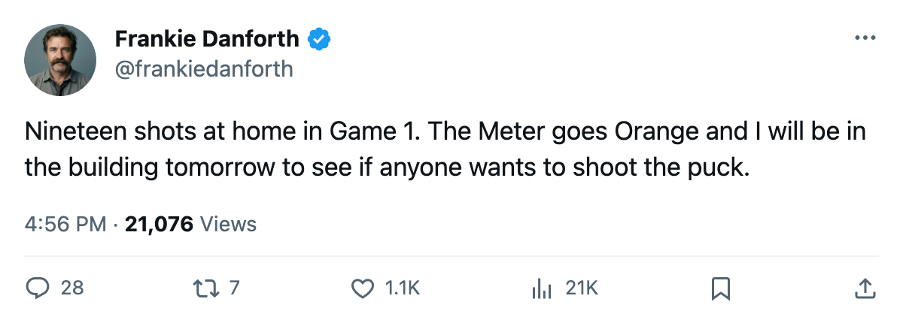
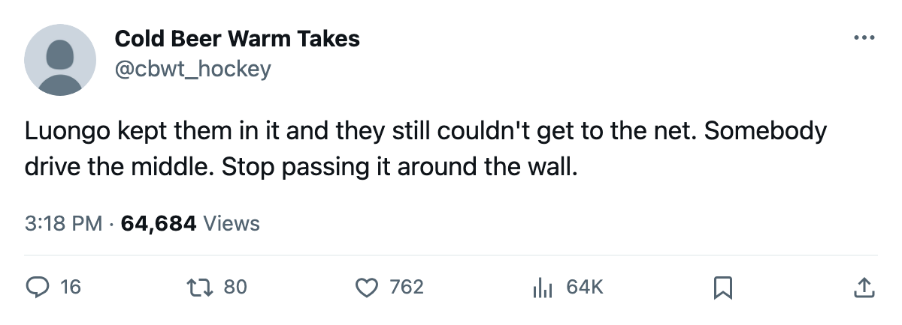

TOR
TORDANFORTH: Code Orange, and the 19 shots I cannot get past
I picked the Leafs to win Game 1. Pittsburgh won it, and the shot count is the part that matters.
 Frankie DanforthColumnist · Queen City Telegram
Frankie DanforthColumnist · Queen City TelegramCode Orange

I wrote it down in this space on the 21st: Toronto beats Pittsburgh on 2005-04-22. Pittsburgh won 3-1. Put that on my tab. The desk also had Pittsburgh earning at least a point, which it did, and I am not going to pretend the split makes me feel better.
The Panic Meter sat at Yellow through the New York series. It moves to Orange. The score was 3-1. The number that moves the Meter is 19.
Nineteen shots, at home, in Game 1 of the second round, against a club that finished the regular season 24-34-11.  Pittsburgh Penguins took 28. The Leafs had the best record in the league at 59-13-5 and 133 points, and they spent the opening night of the second round getting outshot in their own building.
Pittsburgh Penguins took 28. The Leafs had the best record in the league at 59-13-5 and 133 points, and they spent the opening night of the second round getting outshot in their own building.
The New York series ended on 13 shots and a win, and we shrugged because a win is a win and  Roberto Luongo97 was the reason. That shrug is not available now. The Bureau's Book has Luongo at 94, and his spring reads 4-2, 1.68 and .954. He has been the best player in the building for two weeks. A club cannot ask a goaltender to survive a 19-shot night four times in a series.
Roberto Luongo97 was the reason. That shrug is not available now. The Bureau's Book has Luongo at 94, and his spring reads 4-2, 1.68 and .954. He has been the best player in the building for two weeks. A club cannot ask a goaltender to survive a 19-shot night four times in a series.
What the other bench has
 Mario Lemieux85 has 8 points in 7 games. Eric Meloche75 has 7. Pittsburgh closed
Mario Lemieux85 has 8 points in 7 games. Eric Meloche75 has 7. Pittsburgh closed  New Jersey Devils out in six, Game 6 in overtime, and New Jersey was the second seed. Toronto's regular-season edge here was 4-1-0 and 21-12 on goals. That is a piece of paper. Two of the five meetings were one-goal games, and this Pittsburgh team has made a habit of them.
New Jersey Devils out in six, Game 6 in overtime, and New Jersey was the second seed. Toronto's regular-season edge here was 4-1-0 and 21-12 on goals. That is a piece of paper. Two of the five meetings were one-goal games, and this Pittsburgh team has made a habit of them.
The top of the Toronto lineup has done its work.  Marian Gaborik99 has 8 points in 6 games, up six on the Bureau's Development Index.
Marian Gaborik99 has 8 points in 6 games, up six on the Bureau's Development Index.  Gary Roberts87 has 7.
Gary Roberts87 has 7.  Mats Sundin92 has 4. The middle six changed again before Game 1:
Mats Sundin92 has 4. The middle six changed again before Game 1:  Maxim Afinogenov86 in,
Maxim Afinogenov86 in,  Rick Nash85 down, Konstantin Koltsov75 out. I have watched this club shuffle those lines since October and I expect to watch it again tomorrow.
Rick Nash85 down, Konstantin Koltsov75 out. I have watched this club shuffle those lines since October and I expect to watch it again tomorrow.
Orange is one step off Red. Game 1 is one game, and the building gets another one. But 19 shots at home lost them the opener to a club that had no business dictating the pace of it. Game 2 is 2005-04-24 at the Air Canada Centre.

